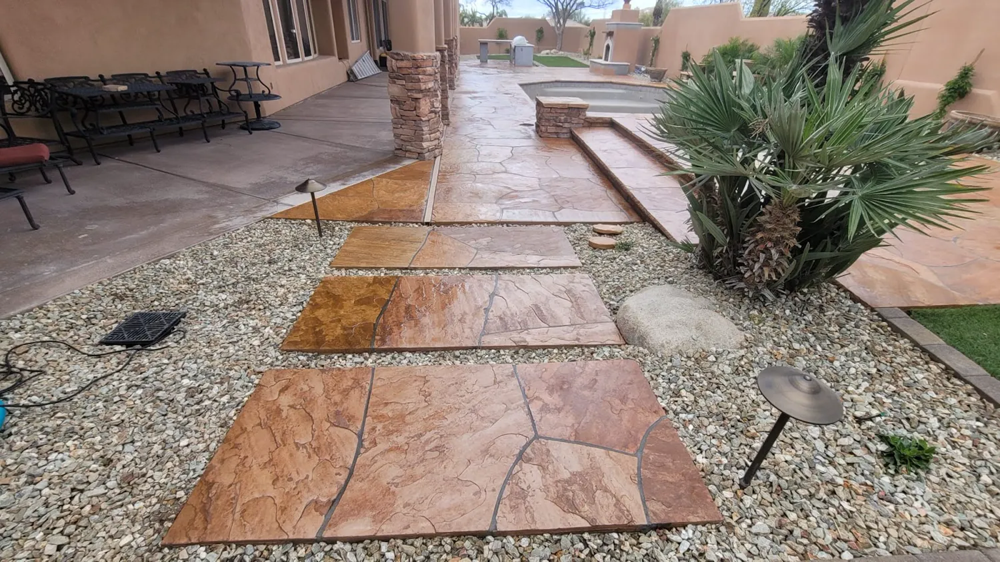
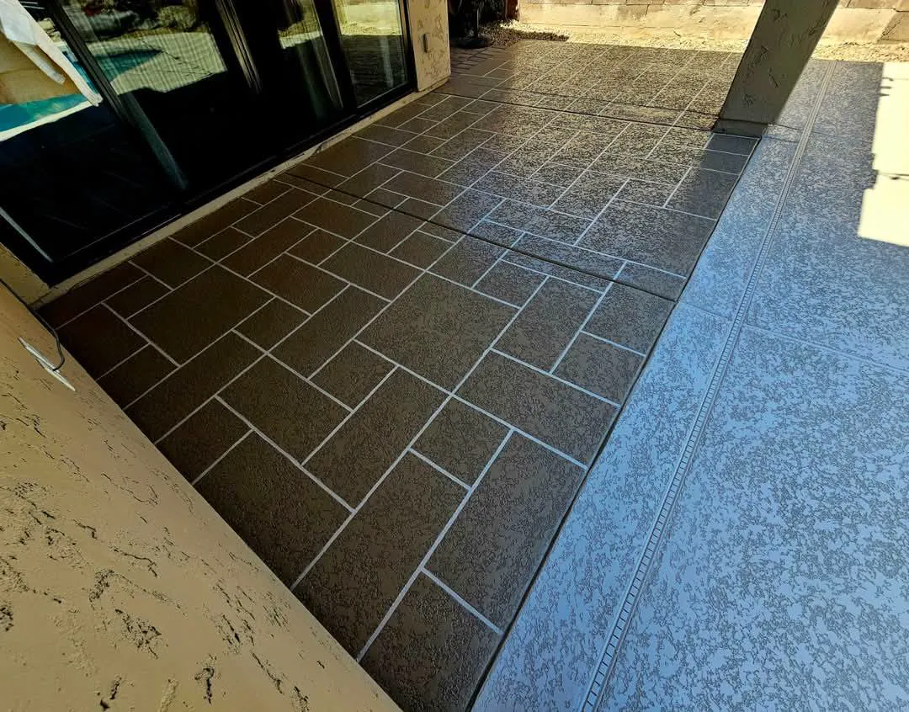
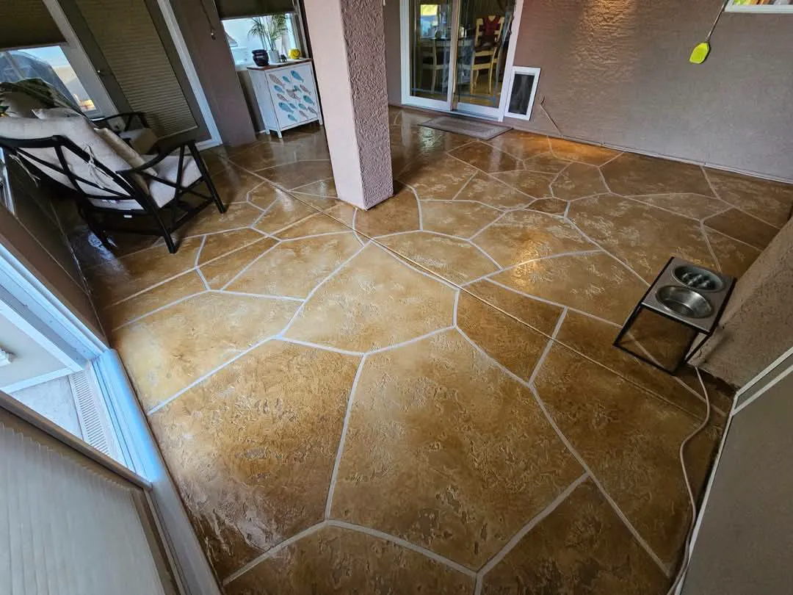

Natural stone and paver sealing in Avondale, AZ
Stone-look concrete, pavers and travertine look their best clean and sealed. Sun Valley Decorative Concrete LLC cleans and seals these surfaces across the West Valley and greater Phoenix, so patios, walks and pool surrounds hold their color and shrug off stains.

- Free no-obligation quotes
- 5.0 stars from 33 Google reviews
- Residential and commercial
What's included.
Arizona sun fades color, hard water leaves white scale, and dirt settles into every joint. A sealer cannot hide any of that, it locks it in. That is why the cleaning and prep come first, and why the sealer has to suit the surface and be applied evenly in the right conditions. Over time sealer wears, so we tell you when to expect to redo it.
- Natural stone sealing for concrete surfaces that mimic stone
- Paver and travertine sealing
- Cleaning and prep to remove dirt, stains and old coatings
- Sealer applied by brush, roller or sprayer for even coverage
- Advice on spills, abrasion and when to reseal
- A free, no-obligation quote
How we do it.
-
Look at the surface
We check what the surface is, how it has weathered and what is on it now.
-
Clean and prepare
The surface is cleaned of dirt, stains and any old coating before sealer goes on.
-
Apply the sealer
Once the surface is clean and dry, the sealer is applied evenly for full coverage.
-
Protect and maintain
We tell you how to care for it and when it will need to be sealed again.
Signs it is time to seal.
If any of these sound familiar, the sooner someone looks at it the cheaper it usually is to fix.
- Water soaks in instead of beading on the surface
- Color has faded or turned chalky in the sun
- Stains from oil, plants or pool chemicals will not wash out
- Weeds or dirt build up in paver joints
Recent work.


Natural stone seal questions.
How often does stone or paver sealer need to be redone?
It depends on the sealer, the sun and the traffic. In Arizona sun, plan on looking at it every few years. We tell you what to watch for.
Can you seal travertine and pavers, not only concrete?
Yes. Paver and travertine sealing is one of the things we do, along with stone-look concrete.
Will sealing change the color?
Some sealers deepen the color and some leave it close to natural. We can try a small test spot so you see it before the whole area.
Does sealing make it slippery?
It should not if the right product is chosen. Tell us if the area is around a pool or steps so we pick accordingly.
Want your stone and pavers protected?
Call us, or send the details and we will call you to set up a free quote.